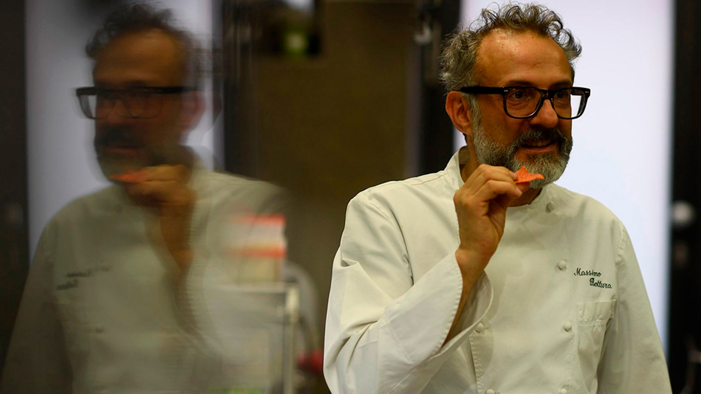

Massimo Bottura (30 de septiembre de 1962 en Módena) es un chef italiano. Es conocido por ser el chef propietario de Osteria Francescana, un restaurante de tres estrellas Michelin, ubicado en Módena, Italia. El 19 de marzo de 1995 Bottura abrió Osteria Francescana en el centro medieval de la ciudad de Módena. Su concepto era yuxtaponer tradición culinaria y la innovación con el arte y diseño contemporáneo. Bottura luego pasó un verano en El Bulli con Ferran Adrià, que le animó a seguir empujando los límites y reescribir los cánones tradicionales con su cocina. En 2012, Osteria Francescana fue galardonado con su tercera estrella Michelin, posteriormente habría sido clasificado en el top 5 en The World's 50 Best Restaurants Awards y recibido una calificación superior de ESPRESSO, Gambero Rosso y los guías Touring Club. Para el 2015, habría sido clasificada como el segundo mejor restaurante del mundo en los premios The World's 50 Best Restaurants Awards de S.Pellegrino. Finalmente, en 2016 recibió el galardón al mejor restaurante del mundo en la misma lista, bajando a la 2da posición para el año 2017. Tras una renovación de platillos, volvió a la clasificación No. 1 en los 50 mejores restaurantes del mundo en 2018. Bottura y Osteria Francescana aparecieron en el episodio uno de la primera temporada de la serie de Netflix "Chef's Table" en 2015.
